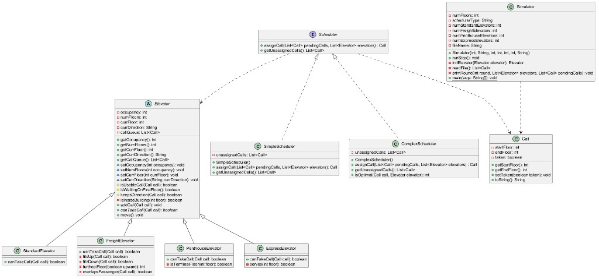

01
Standard
The ordinary car. It takes a real trip inside the building that continues in the direction it is already going. Waiting empty in the lobby, it can head either way.
COMP 305 · Group project
Elevator Simulator runs a building. You choose how tall it is, which elevators are in it, and a list of people who need a ride. The program then steps through the day one floor at a time: a scheduler offers each request to a car that is allowed to take it, the cars move, and a short log shows where everyone is.

What it does
A prompt asks for the number of floors, a simple or a more careful scheduler, how many of each elevator to include, and a file of ride requests. Each request is two floors: where someone is standing, and where they want to go.
From there the building runs on its own. Each round, the scheduler hands a waiting request to an elevator whose rules allow that trip. Every car then moves a single floor. It picks a passenger up on arrival and lets them off at the destination. A car with nothing left to do heads back to the lobby. If a request can never be served, the program says so and continues. The log after each round is the whole interface: the car, its floor, its direction, who it is carrying, and who is still waiting. That is enough to try a building and see whether it behaves the way you hoped.
The ordinary car. It takes a real trip inside the building that continues in the direction it is already going. Waiting empty in the lobby, it can head either way.
Serves the lobby and the upper half of the building. Empty, it can take any call on those floors. Once someone is aboard, it keeps its direction.
Takes one load at a time. It will not accept a trip that overlaps a passenger already queued, and a trip the other way has to begin past the furthest floor it has already committed to.
Runs only between the lobby and the top floor. Empty, either direction is fine. With a passenger, it keeps going the way it is going.
Design
Moving a car up and down is a small problem. The design work was keeping four kinds of elevators understandable at the same time. They follow different rules, and the rest of the program should still treat them the same way. So every car is asked one question: can you take this call? The car answers for itself.
That split is the four pillars of object-oriented design. Abstraction lives in Elevator and Scheduler, which name what the simulator needs and leave the rules inside the classes that own them. Encapsulation keeps a car’s floor, direction, and queue private, and it keeps freight’s overlap checks inside the freight car. Inheritance lets the four cars extend Elevator and reuse the checks they share: the call has to exist, the floors have to differ and sit inside the building, and a moving car has to keep its direction. Polymorphism is the payoff. Both schedulers hold a list of elevators and call canTakeCall. The right car’s version runs, and a new kind of car does not need a new branch in the scheduler.
SOLID is the same idea, applied one decision at a time. Each class has a single job. A call is a request. An elevator decides and moves. A scheduler assigns. The simulator runs the loop and prints it. A new car extends Elevator, and a new scheduler implements Scheduler, so the cars that already work stay as they are. Any elevator can stand in for any other, because each one honors canTakeCall. The scheduler interface stays small: assign a call, and report the ones left over. Cars are not asked to schedule, and the scheduler is not asked to move. The simulator depends on that interface. At startup it is handed a simple scheduler or a complex one, and the loop is the same either way.
A few assumptions kept those rules small enough to test. Floors start at 1, and a request to stay on the same floor is not a trip. Cars begin empty in the lobby, and a moving car does not turn around to pick someone up. Express service means the lobby and the upper half of the building. The penthouse car joins only the lobby and the top floor. Freight carries one load at a time. The simple scheduler takes the first car that says yes. The complex scheduler prefers the car closest to the pickup. Those choices made each test a specific case, and they kept any one car from trying to manage the whole building.
Implementation
I was responsible for the decision each car makes, and for the first version of assignment on the simple scheduler. The simulator, the file of calls, and the complex scheduler came together with the group.
I used test-driven development. For each car I wrote JUnit tests that failed on purpose: a null request, a trip outside the building, a car asked to reverse, and the cases that belong to that car alone. Then I filled in canTakeCall until those tests passed. Shared checks moved onto Elevator once the tests made them obvious. Standard, express, freight, and penthouse each got their own answer. Freight took the most code, because a one-line override could not describe overlapping loads or a return trip that has to wait.
The first assignCall walked the waiting requests and the elevators and returned the first request a car could take. That was enough to prove the cars and the scheduler could talk through the same question.
After
The tests were the useful part. They turned each rule into a case I could check, and they showed which rules were shared and which belonged to one car. I got better at putting the variation in one method and letting the rest of the program depend on that. Freight was the reminder that a subclass still needs its own tests when its rules are genuinely different. Writing the failing test before the code made those differences visible early, instead of discovering them while the simulator was already running.